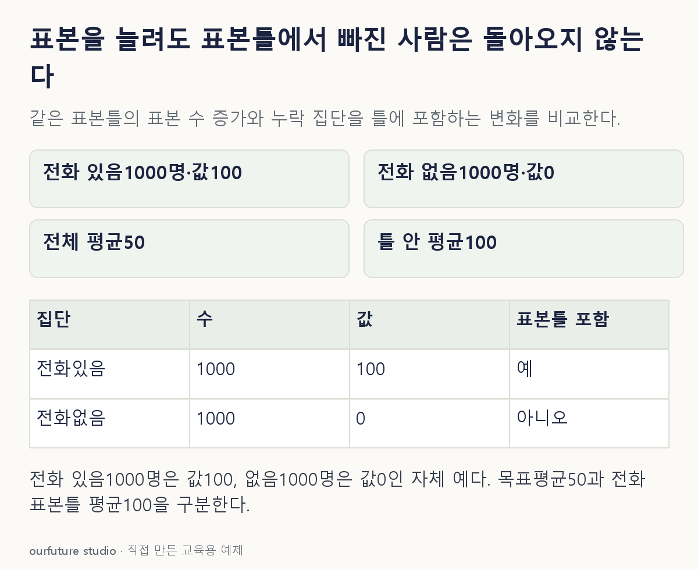

조건을 바꾸며 확인하기
집단 값이 모두 알려진 자체 예다. 실제 편향을 n만으로 계산하지 않는다. 표준오차는 틀 안의 비복원 단순무작위 가정에 한정한다.
설명 그림과 비교하기
아래 그림과 표는 고정된 설명 예제입니다. 기본·변형 중 어떤 조건인지 캡션을 읽고, 바꾼 입력의 결과는 계산 칸에서 확인하세요.

같은 문제를 직접 골라 보기
전체 주민 평균이 목표인데 전화 보유자만 표본틀에 있다. 이 틀에서 100명을 1000명으로 늘린다.
조건을 더 바꾸면?
전화 미보유자도 표본틀에 넣고 전체 주민에게 뽑힐 기회를 주면 무엇이 달라질까?
변형 풀이 확인
기존의 집단 제외라는 포괄 문제를 줄일 수 있다.
여전히 표본오차나 응답·측정오차는 있을 수 있지만 애초에 선택 확률이 0이던 집단에 조사 기회가 생긴다.
많이 뽑는 것보다 누구를 뽑을 수 있는 틀인지 먼저 본다.